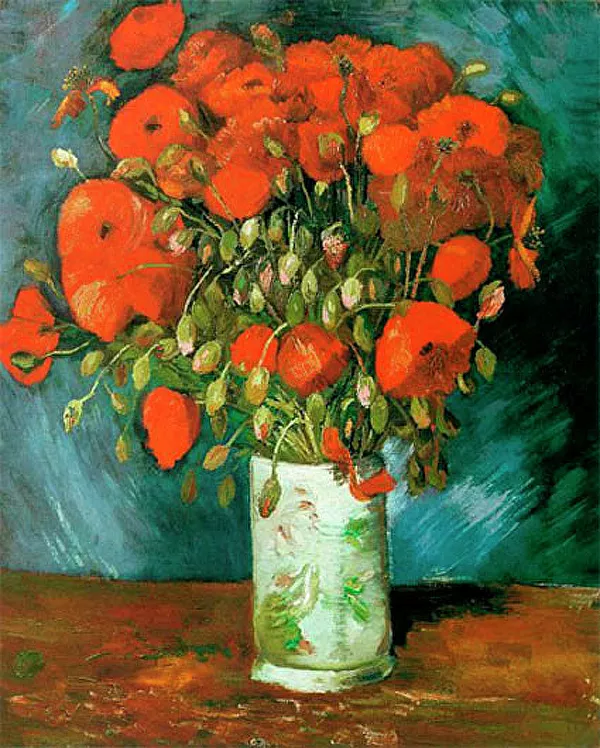
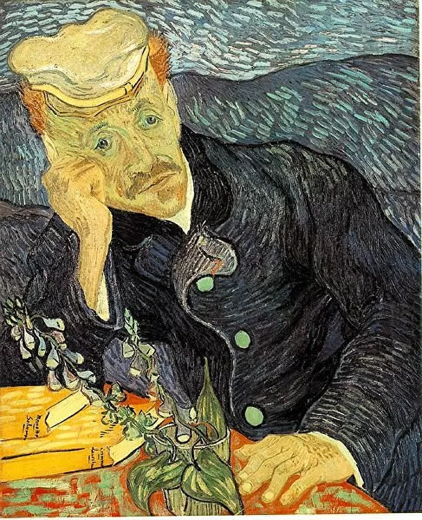
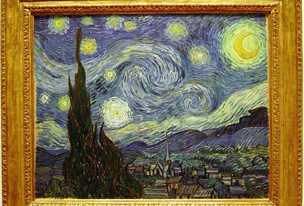

Голландский художник Винсент Ван Гог (Vincent Willem Van Gogh) родился 30 марта 1853 года в деревне Гроот-Зюндерт в провинции Северный Брабант на юге Нидерландов в семье протестантского пастора.
В 1868 году Ван Гог бросил школу, после чего поступил на работу в филиал крупной парижской художественной компании Goupil & Cie. Успешно работал в галерее сначала в Гааге, затем в отделениях в Лондоне и Париже.
К 1876 году Винсент окончательно охладел к торговле живописью и принял решение пойти по стопам своего отца. В Великобритании он нашел работу учителя в школе-интернате в небольшом городке в пригороде Лондона, там же исполнял обязанности помощника пастора. 29 октября 1876 года он провел свою первую проповедь. В 1877 году переехал в Амстердам, где занялся изучение теологии в университете.
В 1879 году Ван Гог получил должность светского проповедника в Ваме, шахтерском центре в Боринаже, на юге Бельгии. Затем он продолжил свою проповедническую миссию в расположенном неподалеку селении Кем.
В этот же период у Ван Гога возникло желание рисовать.
В 1880 году в Брюсселе он поступил в Королевскую Академию художеств (Académie Royale des Beaux-Arts de Bruxelles). Однако из-за своего неуравновешенного характера скоро бросил курс и продолжил художественное образование самостоятельно, используя репродукции.
В 1881 году в Голландии под руководством своего родственника, художника-пейзажиста Антона Мауве, Ван Гог создал свои первые живописные работы: "Натюрморт с капустой и деревянными башмаками" и "Натюрморт с пивным стаканом и фруктами".
В голландский период, начиная с картины "Уборка картофеля" (1883), основным мотивом полотен художника стала тема простых людей и их труда, акцент делался на экспрессивность сцен и фигур, в палитре преобладали темные, мрачные цвета и оттенки, резкие перепады света и тени. Шедевром этого периода считается холст "Едоки картофеля" (апрель-май 1885).
В 1885 году Ван Гог продолжил обучение в Бельгии. В Антверпене он поступил в Королевскую академию изящных искусств (The Royal Academy of Fine Arts Antwerp). В 1886 году Винсент переехал в Париж к своему младшему брату Тео, который к тому времени занял пост ведущего менеджера галереи Goupil на Монмартре. Здесь Ван Гог около четырех месяцев брал уроки у французского художника-реалиста Фернана Кормона, познакомился с импрессионистами Камилем Писарро, Клодом Моне, Полем Гогеном, у которых перенял их манеру живописи.
В Париже у Ван Гога возник интерес к созданию изображений человеческих лиц. Не имея средств на оплату работы моделей, он обратился к автопортрету, создав за два года около 20 картин в этом жанре.
Парижский период (1886-1888 годы) стал одним из наиболее продуктивных творческих периодов художника.
В феврале 1888 года Ван Гог отправился на юг Франции в Арль, где мечтал создать творческое сообщество художников.
В декабре психическое здоровье Винсента сильно пошатнулось. Во время одной из неконтролируемых вспышек агрессии, он угрожал открытой бритвой приехавшему к нему на пленэры Полю Гогену, а затем отрезал себе кусок мочки уха, послав его в подарок одной из знакомых женщин. После этого инцидента Ван Гог был помещен сначала в психиатрическую лечебницу в Арле, а затем добровольно лег на лечение в специализированную клинику Святого Павла Мавзолийского близ Сен-Реми-де-Прованс. Главный врач лечебницы Теофиль Пейрон поставил своему пациенту диагноз "острое маниакальное расстройство". Однако художнику была предоставлена определенная свобода: он мог писать на открытом воздухе под надзором персонала.
В Сен-Реми у Винсента чередовались периоды бурной активности и длительные перерывы, вызванные глубокой депрессией. Всего за год пребывания в клинике Ван Гог нарисовал около 150 картин. Одними из самых выдающихся полотен этого периода стали: "Звездная ночь", "Ирисы", "Дорога с кипарисами и звездой", "Оливы, синее небо и белое облако", "Пьета".
В сентябре 1889 года, при активном содействии брата Тео, картины Ван Гога приняли участие в Салоне Независимых, выставке современного искусства, организованной Обществом Независимых художников в Париже.
В январе 1890 года полотна Ван Гога были выставлены на восьмой выставке Группы двадцати в Брюсселе, где были восторженно приняты критиками.
В мае 1890 года в психическом состоянии Ван Гога наступило улучшение, он вышел из больницы и поселился в местечке Овер-сюр-Уаз (Auvers-sur-Oise) в пригороде Парижа под присмотром доктора Поля Гаше.
Винсент активно занялся живописью, практически каждый день он заканчивал живописное полотно. В этот период он написал несколько выдающихся портретов доктора Гаше и 13-летней Аделины Раву, дочери владельца гостиницы, в которой он поселился.
27 июля 1890 года Ван Гог в обычное время вышел из дома и отправился рисовать. По возвращении, после настойчивых расспросов четы Раву, он признался, что стрелял в себя из пистолета. Все попытки доктора Гаше спасти раненного оказались тщетными, Винсент впал в кому и ночью 29 июля умер в возрасте тридцати семи лет. Был похоронен на кладбище Овера.
Американские биографы художника Стивен Найфех и Грегори Уайт Смит в своем исследовании "Жизнь Ван Гога" (Van Gogh: The Life) выдвинули альтернативную версию смерти Винсента, по которой он умер не от собственной пули, а от случайного выстрела, совершенного двумя нетрезвыми молодыми людьми.
За время десятилетней творческой деятельности Ван Гог успел написать 864 картины и почти 1200 рисунков и гравюр. При жизни была продана только одна картина художника — пейзаж "Красные виноградники в Арле". Стоимость картины составила 400 франков.